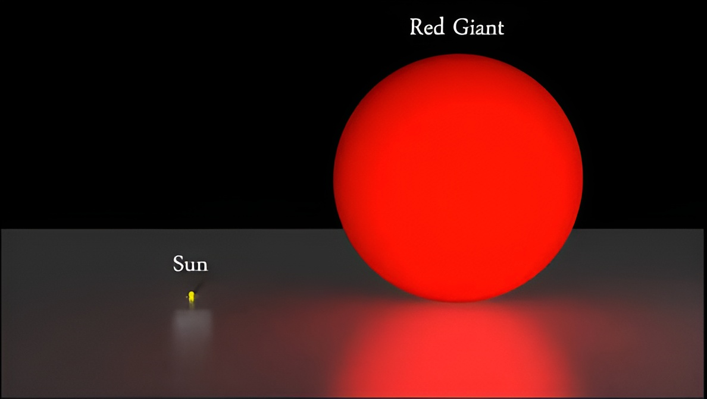
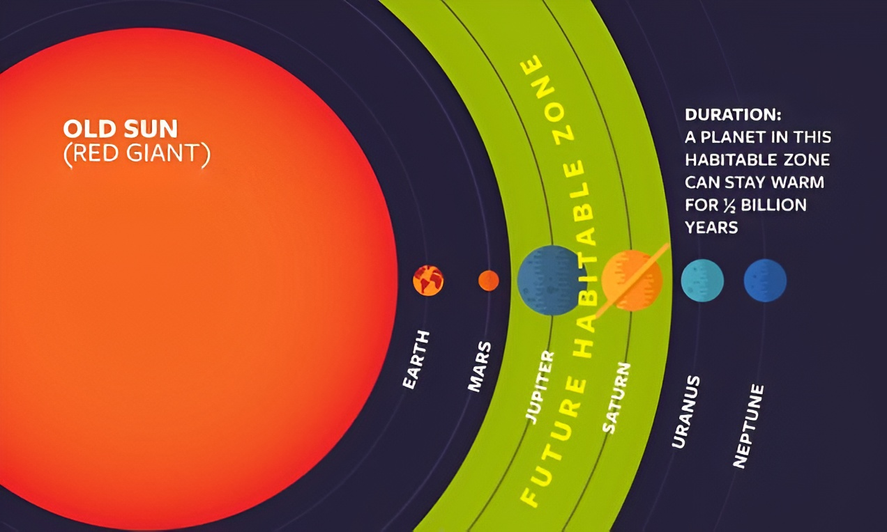

Our Sun has been around for about 4.6 billion years, and it will die in about 5 billion years. But what will happen then? Will Earth survive? What about the other planets in our solar system? To understand, let's talk about what will go down as the Sun dies.
Before stars like our own die, they will swell up into red giants. Red giants are massive, meaning the surface of the star will expand outward and closer to the orbiting planets. In our case, the Sun will swell up so much, to about 100 to 200 times its current size, that the innermost planets, Mercury and Venus, will be engulfed and destroyed. We're not quite sure whether Earth will share a similar fate as those two, but we know that all life on this planet will perish. Since the Sun will be much larger, the crust will be burnt to a crisp.

Mars will escape being swallowed up, but the heat will vaporize its polar ice caps, causing the vapor to enter its atmosphere, which will then be swept away by solar winds. All of the surviving planets, however, will have their orbits significantly altered. When a star transitions from a main-sequence star to a red giant, it sheds a large portion of its mass. This has extreme effects on orbits, since the force two celestial objects apply on each other is directly proportional to mass. The greater the mass, the closer two objects will get to each other. The less the mass, the farther two objects will get from each other.
This will cause all of the surviving planets to drift away from the Sun. The planets expand outward, roughly doubling their distance from the Sun. Neptune will experience the most dramatic change, drifting away to nearly 60 times its current distance from the Sun.

The transition from a red giant to a white dwarf won't be as violent. However, as the outer planets' orbits change, it can cause eccentricities and irregular paths, leading to possible devastating collisions between the Jovian planets.
As you ponder the fate of humanity as the Sun dies, or whether humanity will still exist, stay curious and celestial.